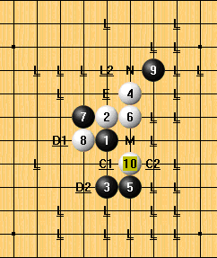
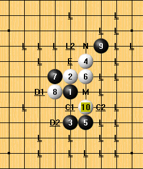
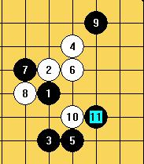

瑞星弱11谱
#1 瑞星弱11谱 作者：longfx 发表时间：2009-3-15 22:47:13
 瑞星弱11.rar

瑞星弱11.rar

谱内有说明
瑞星开局，定式至11手。目前，M，N点为公认的平衡点。C1，C2，D1，D2尚未全部终结，E点已经由他人给出完整谱。其余标L点均为必败。
［本站用户 失落刀 于 2009-3-15 22:51:33 花5个金币送您鲜花一朵］
［本站用户 潇洒 于 2009-3-15 22:59:03 花5个金币送您鲜花一朵］
［本站用户 堂堂 于 2009-3-16 10:02:36 花5个金币送您鲜花一朵］
［本站用户 小丸.net 于 2009-3-16 10:17:07 花5个金币送您鲜花一朵］
［本站用户 小丸.net 于 2009-3-16 10:17:10 花5个金币送您鲜花一朵］
［本站用户 兔子哥哥 于 2009-3-16 11:43:17 花15个金币砸了你1个臭鸡蛋]
［本站用户 浪人痴痴 于 2009-3-16 19:48:29 花5个金币送您鲜花一朵］
［本站用户 浪人痴痴 于 2009-3-16 19:48:30 花5个金币送您鲜花一朵］
［本站用户 浪人痴痴 于 2009-3-16 19:48:30 花5个金币送您鲜花一朵］
［本站用户 浪人痴痴 于 2009-3-16 19:48:31 花5个金币送您鲜花一朵］
［本站用户 二十七刀 于 2009-3-18 16:29:13 花5个金币送您鲜花一朵］
#2 Re:瑞星弱11谱 作者：nara 发表时间：2009-3-15 23:13:10
非常感谢楼主的分享! 学习了
学习了
#3 Re:瑞星弱11谱 作者：侯军学棋 发表时间：2009-3-16 9:44:18
多谢大师，辛苦了#4 Re:瑞星弱11谱 作者：刀魂 发表时间：2009-3-16 9:55:29
楼主 是标明的那个 C1 C2 两点的终结谱不？？？#5 Re:瑞星弱11谱 作者：小丸.net 发表时间：2009-3-16 10:16:45
请楼主解释一下盘面标记的意义。。。因为每个人谱的标记都不一样。我可以给你送两个花。。#6 Re:瑞星弱11谱 作者：wd1988 发表时间：2009-3-16 10:25:03
我说句老实话，这谱一点用处也没有#7 Re:瑞星弱11谱 作者：兔子哥哥 发表时间：2009-3-16 11:42:44
这棋谱真的一点用处都没有，发来只会占空间，没一点实用价值，BS楼主！比如棋谱上的这个11，就到11就没了，真 想说一句“我靠”，骗人的家伙！［本站用户 浪人痴痴 于 2009-3-16 19:47:29 花5个金币送您鲜花一朵］
［本站用户 浪人痴痴 于 2009-3-16 19:47:32 花5个金币送您鲜花一朵］
［本站用户 浪人痴痴 于 2009-3-16 19:47:34 花5个金币送您鲜花一朵］
［本站用户 浪人痴痴 于 2009-3-16 19:47:35 花5个金币送您鲜花一朵］
［本站用户 浪人痴痴 于 2009-3-16 19:47:36 花5个金币送您鲜花一朵］
［本站用户 浪人痴痴 于 2009-3-16 19:47:48 花15个金币砸了你1个臭鸡蛋]
［本站用户 浪人痴痴 于 2009-3-16 19:47:51 花15个金币砸了你1个臭鸡蛋]
［本站用户 浪人痴痴 于 2009-3-16 19:47:52 花15个金币砸了你1个臭鸡蛋]
［本站用户 浪人痴痴 于 2009-3-16 19:47:53 花15个金币砸了你1个臭鸡蛋]
［本站用户 浪人痴痴 于 2009-3-16 19:47:55 花15个金币砸了你1个臭鸡蛋]
#8 Re:瑞星弱11谱 作者：刀魂 发表时间：2009-3-16 12:12:16
引用“
| 这棋谱真的一点用处都没有，发来只会占空间，没一点实用价值，BS楼主！比如棋谱上的这个11，就到11就没了，真 想说一句“我靠”，骗人的家伙！ |
||
|
|
” 小兔子 不用这样吧，那个黑11 没有下文，只能说明这个11没有结论哦，楼主是抱着负责人的态度，才没有妄加下结论哦，其实搂
主能把这个谱发出来已经很有意义啦，至少其他的一下点，有参考哦，你说是不是，再说了，楼主的分享也许对像您这样的高手来说没
有什么大的帮组，但是对于新手呢，对于没有这个谱的人呢，那就大不一样啦哦，总之能拿出来分享的，大家还是持中立态度吧，有用
的 说一声 “感谢”，没用的，也不至于 “bs来bs去的”，这样会降低自己身份的哦。一句话，下棋是为了提高，泡论坛也是一样哦。
#9 Re:瑞星弱11谱 作者：刀魂 发表时间：2009-3-16 12:20:21
不用这样吧7 楼的朋友，楼主能把棋谱分享，可见他也是一大度之人哦，再说了，这个棋谱也许对像您这样的高手来说帮助不大，但是
对于新手呢，对于没有这个谱的人呢，我想那意义就非同一般了吧，能分享出来的棋谱，建议大家持中立的态度，对你有用的话，说一
声“谢谢”，没用的话，也用不着“bs来bs去的”，这样会降低自己身份的哦。总之下棋的目的不同，心态就不同，但是我想做人至少
得学会欣赏别人的有点吧，而不是用带着有色眼睛，看别人，学会欣赏别人，其实就是欣赏自己，因为至少你懂得那是好的一面，这样
利于自己的提高。好了不多说了，总之一句话，摆正心态，正确对待。
#10 Re:瑞星弱11谱 作者：longfx 发表时间：2009-3-16 12:20:28
谱内有说明
瑞星开局，定式至11手。目前，M，N点为公认的平衡点。C1，C2，D1，D2尚未全部终结，E点已经由他人给出完整谱。其余标L点均为必败。
#11 Re:瑞星弱11谱 作者：nara 发表时间：2009-3-16 13:23:30
楼主，11下M或N点后，能不能再发个类似于这样的，瑞星弱12的谱看看啊！呵呵！
#12 Re:瑞星弱11谱 作者：wrwak 发表时间：2009-3-16 16:41:47
要下谱干什么把图片下回去当桌面就行了
#13 Re:瑞星弱11谱 作者：浪人痴痴 发表时间：2009-3-16 19:48:51
肯定支持少少了..#14 Re:瑞星弱11谱 作者：行云流水 发表时间：2009-3-18 16:19:25
还是有一定参考价值的。#15 Re:瑞星弱11谱 作者：小丸.net 发表时间：2009-3-25 8:07:19
我喜欢２上面的１１
#16 Re:瑞星弱11谱 作者：丹尼 发表时间：2009-4-21 12:26:44
谢谢,xiku